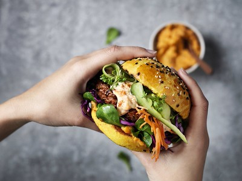

Vegan Burger Recipe

Vegan Burger
A hearty, plant-based burger built on black beans and oats,
packed with flavor from garlic, onion, and smoked paprika.
Easy to make ahead and freezer-friendly.
Serves:4 Prep time:15
minutes Cook time:15 minutes
Ingredients
- 1 can (400 g / 15 oz) black beans, drained and rinsed
- 1/2 cup rolled oats
- 1/2 cup breadcrumbs
- 1/2 small onion, finely chopped
- 2 garlic cloves, minced
- 1 tbsp soy sauce
- 1 tbsp ground flaxseed mixed with 3 tbsp water (flax egg)
- 1 tsp smoked paprika
- 1/2 tsp ground cumin
- 1/2 tsp salt
- 1/4 tsp black pepper
- 2 tbsp olive oil, for cooking
- 4 burger buns
- Toppings of choice (lettuce, tomato, onion, pickles,
vegan mayo)
Instructions
- Make the flax egg.Mix the ground flaxseed
with water in a small bowl and set aside for 5 minutes to
thicken.
- Mash the beans.In a large bowl,
mash the black beans with a fork or potato masher,
leaving some texture rather than a smooth paste.
- Combine the mixture.Add the oats,
breadcrumbs, onion, garlic, soy sauce, flax egg, smoked
paprika, cumin, salt, and pepper to the mashed beans.
Mix well until everything holds together.
If the mixture feels too wet, add a bit more
breadcrumbs; if too dry, add a splash of water.
- Shape the patties.Divide the mixture into
4 portions and shape into patties about 3/4 inch thick.
Chill in the fridge for 15–20 minutes to help them firm
up.
- Cook the patties.Heat the olive oil
in a large skillet over medium heat. Cook the patties for
4–5 minutes per side, until golden brown and heated
through.
- Assemble the burgers.Toast the buns
if desired, then layer with your patty and toppings
of choice.
Notes
Chilling the patties before cooking helps them hold their
shape. For a firmer patty, bake at 200°C (400°F) for
20–25 minutes, flipping halfway, instead of pan-frying.
These freeze well — stack uncooked patties with
parchment paper between them and freeze for up
to 3 months.